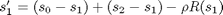
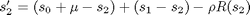
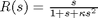
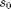
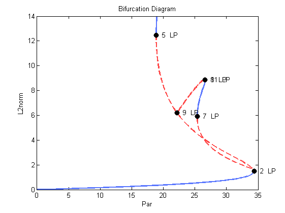

Stationary Solutions of an Enzyme Model (Demo : enz)
The equations, that model a two-compartment enzyme system (Kernevez,1980), are given by
: ,
: ,
where
- .
- The free parameter is .
- Other parameters are fixed.
This equation is also considered by (Doedel, Keller and Kern, 1991).
clear all
Create continuation object.
a{1}=auto;
Print function file to screen.
type(a{1}.s.FuncFileName);
function [f,o,dfdu,dfdp]= func(par,u,ijac) % % function file for enz demo % f=[]; o=[]; dfdu=[]; dfdp=[]; % s0=par(1); rm=par(2); rh=par(3); rk=par(4); % s1=u(1); s2=u(2); % rs1=s1/(1+s1+rk*s1.^2); rs2=s2/(1+s2+rk*s2.^2); % f(1)=(s0-s1) + (s2-s1) - rh * rs1; f(2)=(s0+rm-s2) + (s1-s2) - rh * rs2;
Set initial conditions.
[a{1}.s.Par0,a{1}.s.U0,a{1}.s.Out0]=stpnt;
Set constants.
a{1}.c=cenz1(a{1}.c);
Run continuation.
a{1}=runauto(a{1});
--------------- DYNAMICAL SYSTEMS TOOLBOX ---------------------
USER NAME : ECOETZEE
DATE : 26/10/2010 10:09:57
<
BR PT TY LAB PAR(01) L2-NORM U(01) U(02)
1 1 EP 1 0.00000E+00 0.00000E+00 0.00000E+00 0.00000E+00
1 141 LP 2 3.43569E+01 1.48261E+00 1.04836E+00 1.04836E+00
1 145 BP 3 3.42229E+01 1.66053E+00 1.17417E+00 1.17417E+00
1 214 BP 4 2.21816E+01 6.21472E+00 4.39447E+00 4.39447E+00
1 244 LP 5 1.88871E+01 1.24765E+01 8.82220E+00 8.82220E+00
1 250 EP 6 1.89864E+01 1.39722E+01 9.87985E+00 9.87985E+00
BR PT TY LAB PAR(01) L2-NORM U(01) U(02)
2 84 LP 7 2.53727E+01 5.91179E+00 5.88408E+00 5.71738E-01
2 104 LP 8 2.66221E+01 8.84510E+00 8.78280E+00 1.04795E+00
2 172 LP 9 2.21816E+01 6.21472E+00 4.39452E+00 4.39443E+00
2 173 BP 10 2.21825E+01 6.21537E+00 4.34437E+00 4.44492E+00
2 227 LP 11 2.66221E+01 8.84511E+00 1.04796E+00 8.78281E+00
2 250 EP 12 2.62164E+01 8.09079E+00 7.85840E-01 8.05254E+00
Total Time 0.531E+00
>
Data is contained in the autof7 object.
a{1}.f7
ans =
autof7
Properties:
Ibr: [500x1 double]
Mtot: [500x1 double]
Itp: [500x1 double]
Lab: [500x1 double]
Par: [500x1 double]
L2norm: [500x1 double]
U: [500x2 double]
Out: [500x0 double]
Special points are contained in the autof8 object.
a{1}.f8
ans =
autof8
Properties:
Ibr: [12x1 double]
Mtot: [12x1 double]
Itp: [12x1 double]
Lab: [12x1 double]
Nfpr: [12x1 double]
Isw: [12x1 double]
Ntpl: [12x1 double]
Nar: [12x1 double]
Nrowpr: [12x1 double]
Ntst: [12x1 double]
Ncol: [12x1 double]
Nparx: [12x1 double]
Ifpr: []
T: [12x1 double]
Tm: []
Par: [12x36 double]
Rldot: []
U: [12x2 double]
Ups: []
Udotps: []
Create plot object and plot diagram.
- Blue solid lines represent stable solutions
- Red dashed lines represent unstable solutions
p=plautobj; set(p,'xLab','Par','yLab','L2norm'); ploteq(p,a{1});